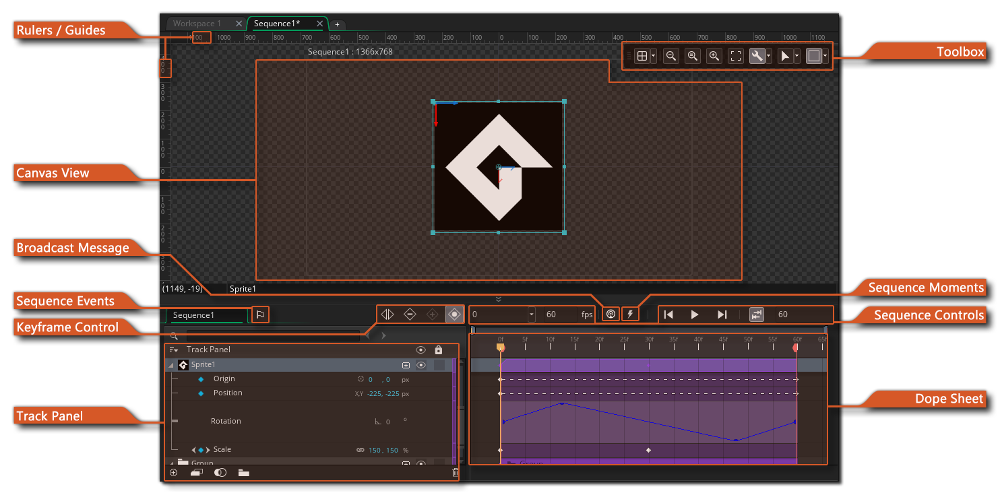
A sequence is essentially a collection of assets that perform a dynamic animation over time. They can contain sprites, instances, sounds and other things, and each of these can be set to move or change colour, or start/stop animating over time within the sequence itself. The assets you add are assigned to specific tracks within the sequence and these tracks can then have different attributes applied to them - called keys - which can be static or change over time. All editing of a sequence takes place in the Sequence Editor which is essentially comprised of three areas:
- the Canvas - where you place the assets that make up the sequence
- the Track Panel - where you add/remove asset tracks and parameter tracks to your sequence
- the Dope Sheet - where you add/remove/edit the keyframes of the tracks and control how they behave over time.
Note too that you can have sequences within sequences to create complex animations and effects, and sequences can also be accessed and changed through code to give you as much control as possible over how they will be displayed and used in your game. For more information on the coded aspect of sequences, please see the section on the Sequences Functions.
Before continuing to explain the details of the editor, we'll take a moment to explain how a sequence is created as well as some keywords that are used in the descriptions so you'll have a more thorough understanding of how the Sequences Editor works. The general workflow for creating a sequence is as follows:
- First you'd create your sequence from the Asset Browser, which
will open it the Sequences Editor.
- Next you'd drag an asset (sprite, object, sound or sequence)
into the editor canvas.
- This will create an Asset Track in the Track
Panel panel, and add an Asset Key to the Dope Sheet
Editor. The asset track is simply the name of the track that
contains the asset, while the asset key is a bar that is drawn to
symbolise the number of frames that the asset will be animated over
in the sequence.
- At this point, you'll usually want to position the asset in the
canvas at its initial position for the start of the sequence, and
add in any initial transforms, like scale or rotation.
- When you are happy with the initial settings, you will want to
record the parameter keys - which is simply the name given
to the values for scale, rotation and position that a specific
asset key has at a any point in the dope sheet timeline.
- Next you'd change the position of the playhead (the
current play position in the dope sheet timeline) and then move or
change the asset transforms and record another parameter key.
- All parameter keys are stored in additional parameter
tracks which are a subset of tracks under the main track in the
Track Panel, and you can edit the parameter key data for each
parameter in the track editor.
- Now you would repeat the above process for the length of the sequence, moving, rotating and scaling the asset as required, and then adding more assets as you need them.
Below you can find an overview of each of the features of the sequence editor, and at the bottom of this page are links to pages that explain the three main features in more depth:
The rulers along the edge of the canvas show you the position of the things that are placed within it, and are marked from (0, 0) which is the center of the canvas and the default origin for the sequence. You can click and drag on the rulers to pull a horizontal or vertical guide into the sequence, and this guide can then be used to accurately position the different assets that are being used, as moving an asset close to one will "snap" it to the guide. While positioning assets within the sequence, smart guides will also be temporarily shown indicating the distance between assets, as well as the distance from the sequence boundary or center point. 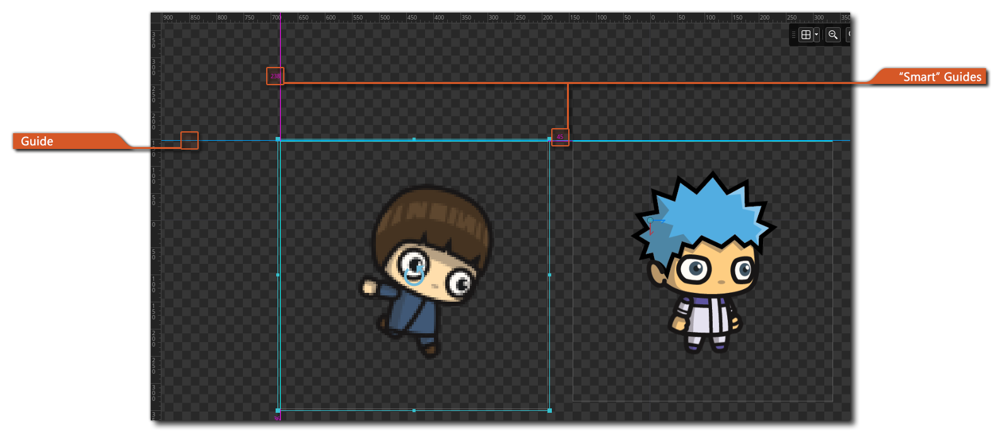
Note that the boundary of the sequence and the center point marker lines for the sequence are also considered guides and will behave the same way as guides added from the rulers, with the exception that they cannot be edited.
The distance that assets "snap" to guides, as well as other properties, can be set in the Sequences Preferences.
The canvas view is where you can see a preview of the sequence canvas, and is where you can edit and position the different assets that make up your sequence. You can add an asset to the sequence by simply dragging it from the asset browser and then dropping it into the canvas, and this will create a new track in the Track Panel, and also add a key for the asset at the current timeline playhead position. The following assets can be dropped onto the canvas in this way:
- Sprites
- Objects
- Sounds
- Sequences
Each asset added to the canvas can be manipulated in multiple ways - rotated, transformed, or translated - based on how you interact with it, as each asset will have a bounding box and a transform gizmo as well as bounding box controls. This is explained in more detail on the page about the Sequence Editor Canvas.
NOTE: Sound assets when added to a sequence are essentially sound emitters that play only the given sound resource.
To navigate around the canvas view, you can use the same basic controls as the for general Workspace, ie: Use the middle mouse button and drag to pan the canvas (or alternatively use the space key and the left mouse button), and you can scroll horizontally with the mouse wheel or zoom in and out using the
/
key and the mouse wheel . You can also cut, copy and paste assets using the
This button will add a broadcast message to the sequence timeline in the dope sheet, opening a dialog where you can add the message to be broadcast. The message will be added wherever the timeline playhead is in the dope sheet and consists of a simple string that can be picked up in the Asynchronous System Event when it is triggered and then acted on.
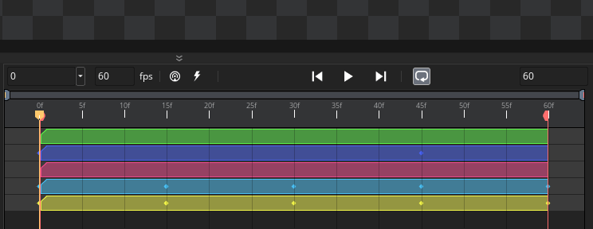
Once added, the message will be shown in the Dope Sheet, and you can click the right mouse buttonon it to open a menu where you can delete the message or edit it. For more information on Broadcast Messages please see here.
The keyframe control buttons are one of the ways that you can add, remove or edit specific keys in the dope sheet. The buttons are as follows:
- - This is the "Split selected keys" button. When you have selected one or more parameter keys in the dope sheet, you can then click this button and they will be split into two separate keys at the timeline playhead position:
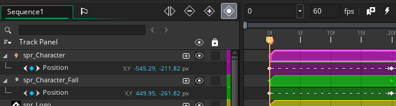
- - This is the "Delete selected keys" button. When you have selected one or more parameter keys in the dope sheet, you can then click this button and they will be deleted:
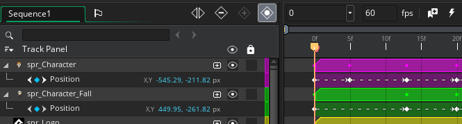
- This is the "Record a new key" button. When you have selected an asset key in the dope sheet and press this button, new parameter keys will be added to the asset track as parameter tracks, and the parameter keys will be added as points in the dope sheet timeline at the playhead position:
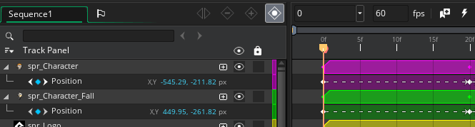
- This is the "Automatically Record Changes" button. When this is enabled, any changes made to the asset within the canvas will be automatically recorded and the appropriate parameter tracks and parameter keys added at the playhead position in the dope sheet. For example, if you move the playhead from frame 0 to frame 10 and then in the canvas move the asset 100 pixels to the right, a parameter track will be added for position, and the parameter keys will be added at frame 0 (the initial position) and at frame 10 (the playhead position) and when you press "Play" on the sequence, the asset will move 100px to the right over ten frames.
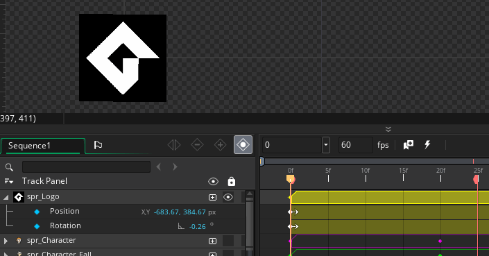
In a similar way to regular objects, sequences can have events that can run some code assigned to them. The code is assigned in the form of a scripted function which can take no arguments and will be called when the event is triggered.
Events are added by clicking the Add Event button 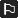 which will open the following window: 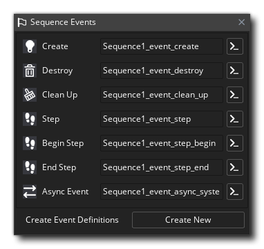
The events listed here are as follows:
- Create - This event happens when an instance of the sequence is first created, and is the very first thing that happens within a sequence placed in the room through the room editor when a room is entered.
- Destroy - This event is executed when an instance of the sequence is destroyed, and will be run before the Clean Up event (see below).
- Clean Up - This event will be called after any event that removes an instance of the sequence from the room. So, it will be triggered if the sequence is destroyed, if the room ends, or if the game ends, and is designed to perform any task that you need performed once when the sequence instance is removed from the game for any reason. If you have destroyed the sequence instance using, for example, layer_sequence_destroy(), then this event will be called after the Destroy Event (see above).
- Begin Step / Step / End Step - The Step Event is an event that is checked every single step (frame) of the game while the sequence instance exists, and is split into three parts: begin, step and end. For most things the standard step event will be fine to use, but sometimes you want a bit more control over what code runs and at what time, so for that you are provided with the Begin and End step events, and these events will always be triggered in the same order every step (frame) of the game. Important! If the sequence is paused then these events will not be triggered, and when play resumes they will be triggered the next frame after the sequence starts playing again. Also note that the order of events is not influenced by the playhead direction, and even if the sequence is playing backwards, the events will still be run as Begin, Step and End.
- Async Event: This is the equivalent of the object Asynchronous System Event. Important! If the sequence is paused then this event will not be triggered.
Each event can be assigned a single function which will be called when the event is triggered. You can assign the function using the input box for the vent, and clicking the arrow button will open the script editor for the function to be edited. You can also click the Create New button at the bottom to create a new script resource with "boilerplate" functions already defined and ready to be filled in. Note that you can change the function names to anything you require and do not have to use the predefined names, and you can also remove any function definitions that you don't need. It is important note that functions used for sequence events cannot take any arguments.
Sequence events can also be added and edited using code. For more information please see here.
A sequence moment is a position on the timeline where the sequence can call a function. This is a scripted function that must have no parameters and when the moment (frame) given on the timeline is reached, this function will be called. To set a moment, you simply move the playhead to the required position and then click the Add Moment button, and in the dialog that opens you give the name of the function to call.
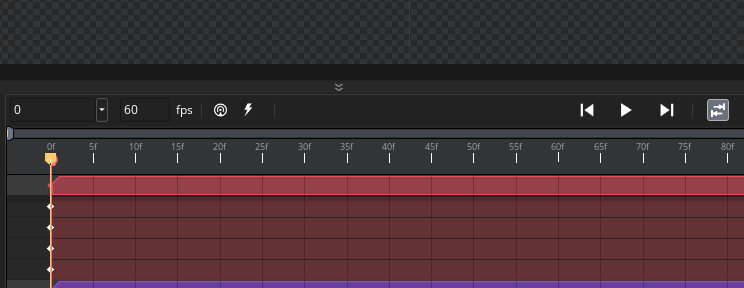
When adding a moment function, you can click the button to go to the script with the specified function, or you can click the button to create a new script resource with an empty function ready for editing. You can also remove moment and the function call it contains by clicking the button.Sequence moments can also be added and edited using code. For more information please see here.
The Track Panel is where each of the assets in your sequence is listed as a track, with each track having sub-tracks for any parameters that are being changed for the asset. You can click
You can create a track by dragging an asset from the Asset Browser (either a sprite, an object, a sound or a sequence) into the sequence canvas, or you can click the (+) icon at the bottom to add a new track and select the asset to use from the Asset Explorer window that opens. The new track will be created and the asset added at the current playhead position within the dope sheet timeline:
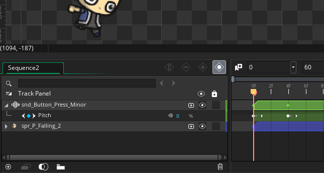
The track editor has many other features that are discussed in full detail on the following page: The Track Panel.
The Sequence Editor toolbox contains the different visualisation and setup options for the sequence being edited.
- Toggle Canvas Grid
: This will toggle on/off the Sequence Editor canvas grid. This is a grid that GameMaker Studio 2 draws over the preview canvas to divide it into sections, and by default is set to 32x32px in size. However if you click the Grid Menu icon
you will open the grid options: 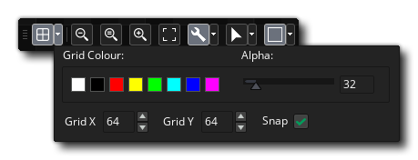 These options permit you to set the grid colour and alpha, as well as the cell values for the grid along the X and Y axis. You also have an option to enable or disable grid snapping here (disabled by default). You can use the keyboard shortcuts "G" and
+ "G" to toggle the grid visibility and grid snapping respectively.
- Canvas Zoom Controls : These buttons control the current canvas zoom level. You can zoom in or out and clicking the
button will reset the canvas to be 1:1 with the room being edited. You can also click the Window Fit button to make the entire sequence canvas fit within the current editor workspace (this will zoom in/out as appropriate to make it fit). Note that you can also zoom in and out using the
- Toggle Widgets : Clicking this will enable or disable the different widgets visible in the canvas. When enabled you will see all the widgets associated with the different assets and the canvas itself, and when disabled these will not be shown, giving a clearer view of how the sequence looks. Note that this is enabled by default, and there is a menu available from the right options button
- Toggle Transform Widget Mode : Each asset added to a sequence has a transform widget at its origin:
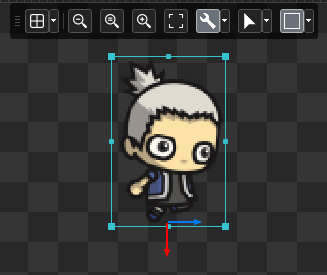
This widget can control how the asset is scaled or rotated, as well as control its position and the position of the origin of the asset, however it only shows one of these options at a time. Clicking this button will switch between the different widget types or you can click on the options menu
- Toggle Canvas Frame : This button can be used to toggle the canvas frame on or off (it is on by default). The canvas frame is simply a guide that is used to judge where elements are placed in sequence canvas and any elements outside of the frame will not be rendered. This button also has the following options menu
This bar has the various sequence playback controls: 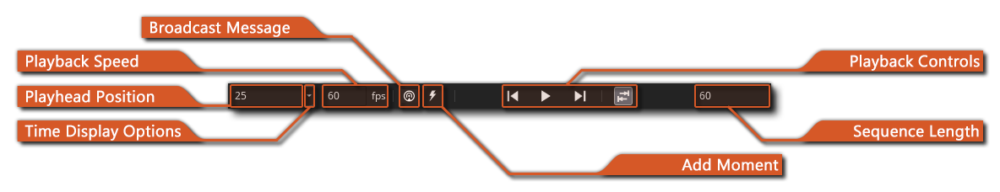
- Playback Speed: this is the playback speed of the sequence in frames (steps) per second.
- Playhead Position: this is the current playhead position, and can be shown in time (h:m:s) or frames (f).
- Time Display Options: here you can set whether to display the sequence times in hours, minutes and seconds (h:m:s) or frames (f).
- Broadcast Message: Clicking this permits you to add a broadcast message at the current playhead position (this is explained in more detail earlier on this page).
- Add Moment: Clicking this permits you to add a sequence moment at the current playhead position (this is explained in more detail earlier on this page).
- Playback Controls: with these buttons you can start and stop the sequence preview, as well as move the playhead to the start or the end. There is also a button to set whether the sequence should loop or not, and whether the sequence should "ping-pong" or repeat when looping. Like with the Sprite and Image editor, this control will not affect the way the sequence plays in the room when the project is compiled, and is purely a visual guide for previewing the sequence in the editor.
- Sequence Length: this displays the total possible length of the sequence in frames (f) or in time (m:h:s). Note that the sequence may not run to this length if you have set the clip region to be smaller.
The Dope Sheet is where all the asset and parameter keys for each track are shown. You can click
Due to the initial complexity of the sequence editor, we have only given a brief overview of the features available here, but we have additional pages listed below that go into more depth about its features and how they can be used: